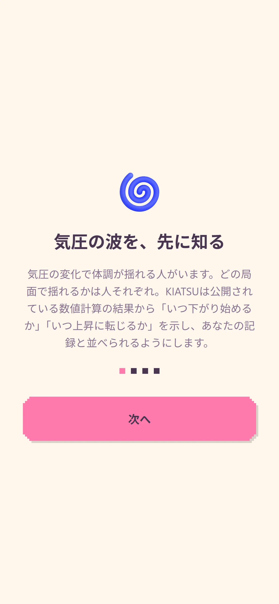
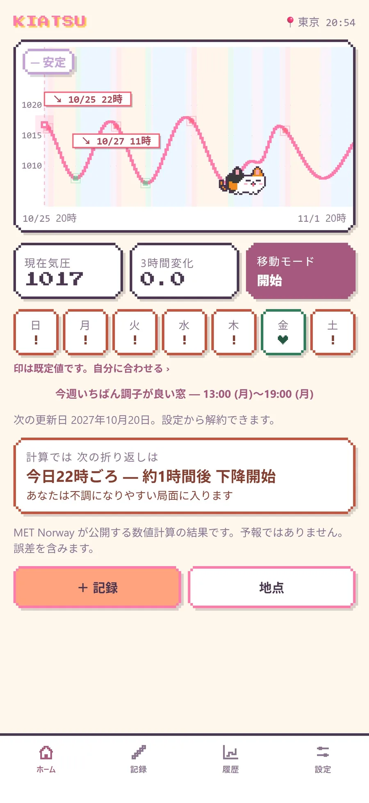
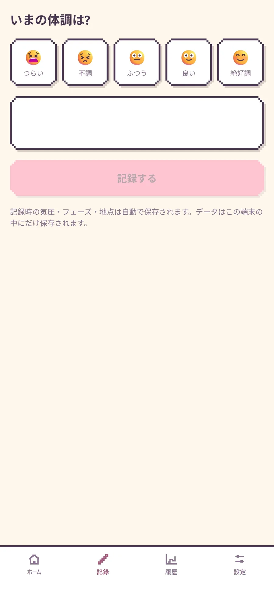
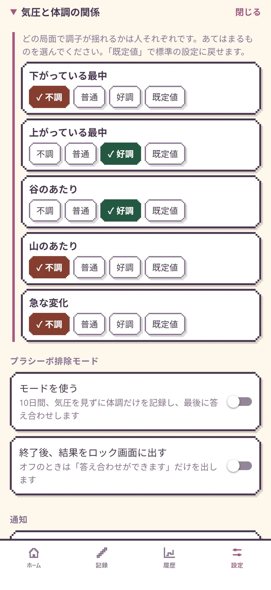
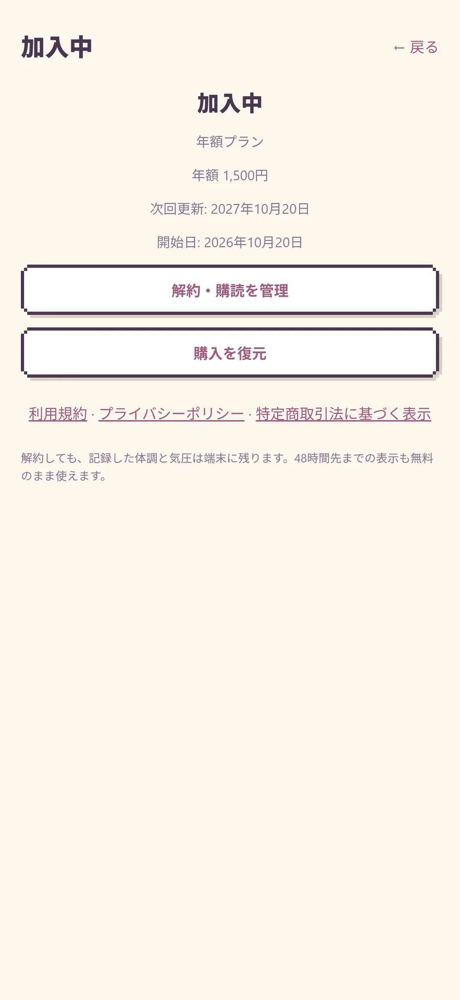

操作マニュアル
画面や項目の名前は、アプリに表示される言葉のまま書いています。気圧の値は MET Norway の数値計算の結果で、気象の予報ではありません。
1. はじめに
KIATSU は、気圧の上がり下がりと体調の記録を見比べて、気圧がどう動くときに自分がしんどくなりやすいかを確かめるアプリです。病気の診断・治療・予防を目的としたものではありません。
ほかの気圧アプリにはあまりない機能が3つあり、どれも無料で使えます。
- 移動モード：坂道や山、エレベーターなどで高さが変わったときの気圧の変化を記録し、天気によるものと高さによるものに分けて見せます
- プラシーボ排除モード：気圧を見ないまま体調を記録し、あとで答え合わせします
- 記録の反映：記録から見えた傾向を設定に取り込み、通知と表示を自分に合わせます
2. 最初に開いたとき

最初に開くと、気圧と体調の関係や、通知と位置情報の許可について何枚かの画面で説明します。「はじめる」まで進むとホームが開きます。許可しなくても基本の画面は使えますが、いまいる場所の気圧を見るときと移動モードを使うときは、位置情報の許可が必要です。
3. ホーム

- いまの局面（下降・上昇・変わり目・安定）と、次の折り返しまでのおおよその時間
- 48時間先までの気圧のグラフ（年額プランでは7日先まで）
- 週の帯：曜日ごとに並んだ札です。不調になりやすい日には印が付きます
- 「移動モードを開始」を押すと、移動中の記録が始まります
プラシーボ排除モードのあいだは、気圧のグラフと局面と印が隠れます。
4. 記録

いまの体調を5つの顔から選び、必要ならメモを書いて記録します。そのときの気圧は、アプリが自動で記録に添えます（プラシーボ排除モードのあいだは、気圧を画面に出しません）。
5. 履歴
週ごと、月ごとに、これまでの気圧と体調の記録を振り返れます。画面下の「移動による気圧変化」からは、過去の移動の記録を開けます。年額プランでは、医師に見せやすい形で記録を書き出せます。
6. 移動モード
坂道や山、エレベーターなどで高さが変わったときの気圧の変化を記録します。ホームの「移動モードを開始」から始めます。初めて使うときは、位置情報を「常に」許可するよう求められることがあります。移動モードを使っていないときに、裏で位置を取ることはありません。
記録中
- 画面を消しても、ほかのアプリを使っていても記録は続きます
- 記録中は、画面上部のステータスバーに青い表示が出ます
- 気圧が急に変わると（標準の設定では、10分でおよそ3hPa）、何による変化かの目安を添えて通知します
- 30分ほど動きがないと、自動で終わります
変化の内訳
詳細画面の「変化の内訳」には、次の3つが出ます。
- 高さの分：高さが変わったことによる気圧の変化（GPS で測った高さの差も出ます）
- 天気の分：まわりの天気による気圧の変化（周辺の海面気圧の動きから求めます）
- 横に移動した距離（参考に出すだけで、気圧を分ける計算には使いません）
7. 設定

設定画面のおもな項目です。
- サブスクリプション（年額プランの購入、復元、解約の入口）
- 地点
- 気圧と体調の関係（不調になりやすい局面）
- プラシーボ排除モード
- 通知
- 表示・スキン
- データ
8. 年額プラン

- 7日先までの気圧のグラフと週の帯
- 自分で選んだ傾向をもとにした、今週いちばん調子が良さそうな時間帯の目安
- 記録の書き出し
記録、通知、48時間先までの表示、移動モード、プラシーボ排除モードは、加入しなくても使えます。7日間の無料お試し中に解約すれば、料金はかかりません。解約は iPhone の「設定 › 自分の名前 › サブスクリプション」で行えます。アプリの設定画面からも解約の画面を開けます。
9. 通知の種類
- 選んだ局面が来る前の知らせ（1時間前、3時間前、6時間前から選べます）
- 移動モード中に気圧が急に変わったときの知らせ（何による変化かの目安つき）
- プラシーボ排除モード中の、記録を促す知らせ（9:00 と 21:00。気圧の知らせは止まります）
- 答え合わせができるようになったときの知らせ
10. 答え合わせ（プラシーボ排除モード）
設定の「プラシーボ排除モード」から始めます。10日間、ホームと履歴と通知から気圧を隠し、体調だけを記録します。思い込みが入らないよう、モードのあいだは傾向の設定を変えられません。
- 記録を促す知らせが 9:00 と 21:00 に届きます
- モードのあいだ、気圧の知らせは止まります
- 終わったら「答え合わせを見る」から、気圧の動きと自分の記録を見比べられます
- 傾向がはっきり出た局面は「反映」でき、通知のタイミングと週の帯の印が自分の記録に合ったものになります
- 途中でやめた場合は、それまでの記録で答え合わせします（記録が少ない局面は「判断しない」になります）
11. 困ったとき
- 通知が来ない：端末の通知の許可と、アプリの「気圧と体調の関係」「通知」の設定を確かめてください。選んだ局面がしばらく来ないときは、通知は届きません。プラシーボ排除モードのあいだは、気圧の知らせが止まります。
- 移動モードを始められない：位置情報の許可を確かめてください。移動中に記録を続けるには「常に」の許可が要ることがあります。
- 年額プランが使えない：購入したときと同じ Apple アカウントで、購入画面の「購入を復元」を試してください。
- 機種変更したら記録が消えた：記録は端末の中にだけ保存しているため、新しい端末へは移りません。
解決しないときは サポート へご連絡ください。お使いの機種と iOS のバージョン、起きたことを書いていただけると助かります。
12. 用語
- 局面：下降、上昇、変わり目、安定など、気圧がどう動いているか
- 折り返し：計算の上で、次に局面が切り替わるおおよその時刻
- 週の帯：ホームにある、曜日ごとの7枚の札
- 印：不調になりやすい日に付く記号
- 変化の内訳：移動モードで、気圧の変化を高さの分と天気の分に分けて見せるカード
- 計算値：MET Norway の数値計算で求めた気圧の値
- hPa：気圧の単位、ヘクトパスカル
- 答え合わせ：プラシーボ排除モードが終わったあと、自分の記録と気圧の動きを見比べる画面